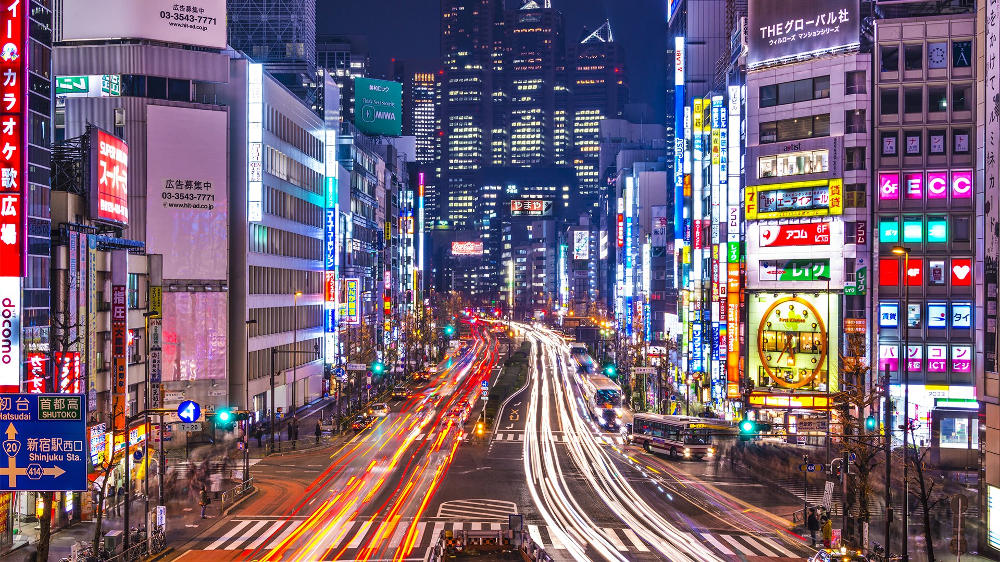
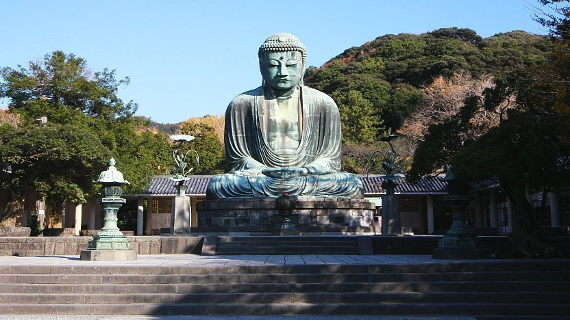

.png)
Japan
Japan is one of the oldest civilizations and has a beautiful and diverse history. a trip to japan promises adventure around every corner. experience a ride on the lighting fast Shinkansen trains or indulge in diverse Japanese cuisine. its best to visit japan during cherry blossom season, japan is one of the best places in the world to view the spring cherry blossom. they also have the most exciting summer festivals.
Best places to visit in Japan

Tokyo-Essence Of Japan
Tokyo is the city that reflects the colors of Japan. In Japan, places to visit are endless, and exploring everything in one trip would always be impossible. But, the popular city of Tokyo still deserves the top spot in your itinerary, thanks to its anime culture and world-class attractions. And if the historical sites don't impress you much, the city has also got a great culinary scene! This is undoubtedly amongst the best places to visit in Japan.
.png)
Osaka-A Cultural Delight
With the best shopping arcades, eateries that offer incredible food, and the top nightlife hotspots in the city, Osaka is one of the major places to go in Japan. Believe us, it would not only pamper the foodie or party lover in you, but also the die-hard tourist who loves witnessing the wonders of every place he or she visits. This is most preferred places to visit in japan for first timers!

Kamakura-Where Buddha Resides
The Kyoto of eastern Japan! In Japan, points of interest might vary depending on the type of traveler you are. But it's quite the opposite when it comes to the seaside town of Kamakura. Boasting bamboo groves, ancient temples, vibrant beaches, great shopping alleys, and lip-smacking local delicacies, this town has everything that would amuse you.